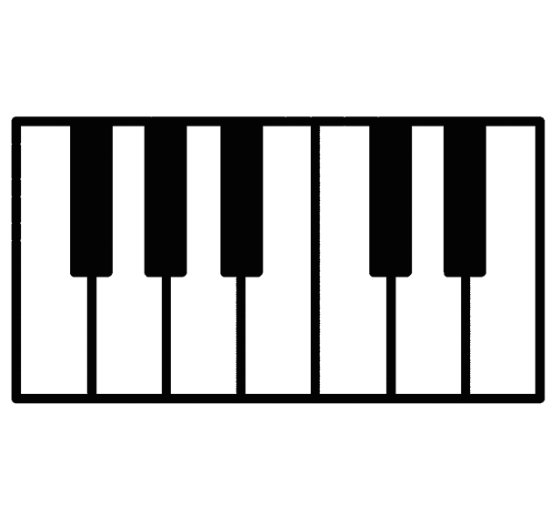

Home Page
Music is all around us and is part of daily life. Music can be found in commerical jingles, the theme song of your favorite TV show, the background music in a video game, on the radio, and much more. Have you ever wondered what makes the sounds that you hear in the music you listen to everyday?
There are numerous different musical instruments all around the world. This website will introduce you to the five main categories of instruments.
Click on the icons below to explore the different instruments:
 |
 | |||
| Strings | Woodwinds | Brass | Percussion | Keyboard |
(scroll icons left/right on smaller screens)
The instruments that I play include piano, percussion, and ukulele.
Cool Videos
Instruments from around the world:
An unconventional musical instrument:
Musical racetrack:
Classifying musical instruments: